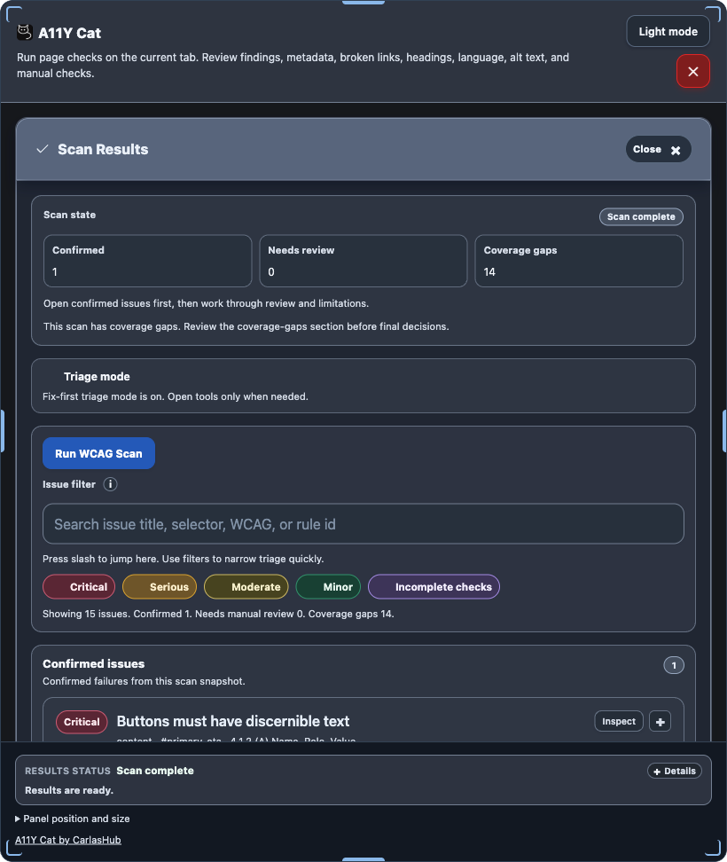
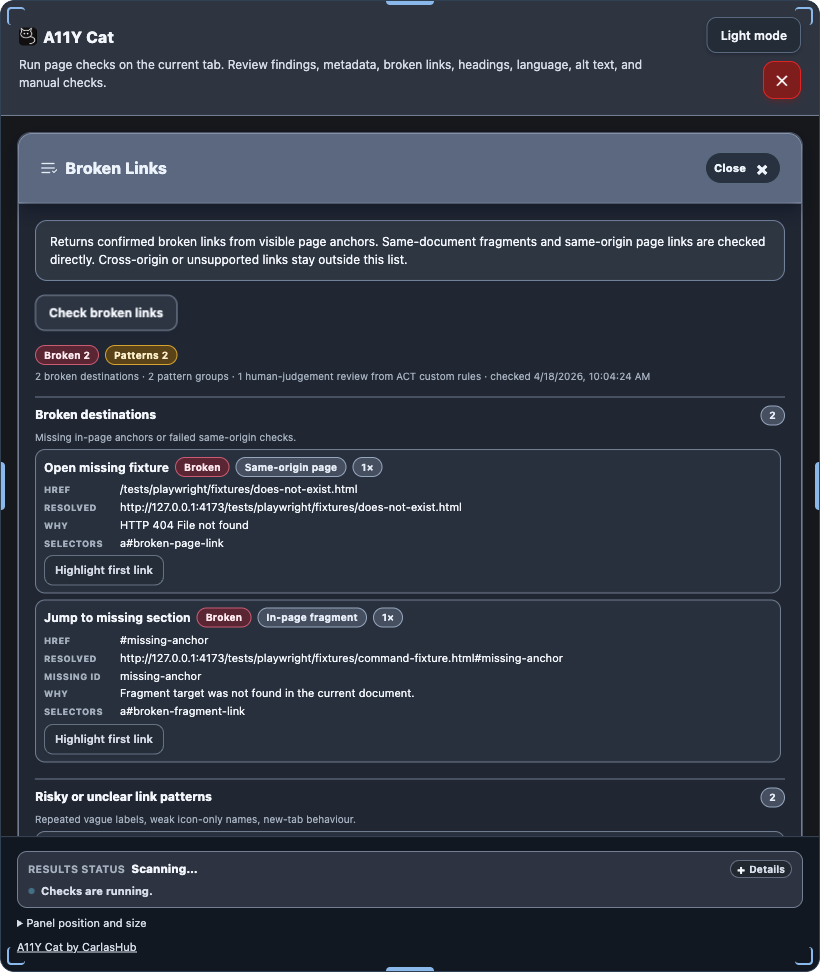
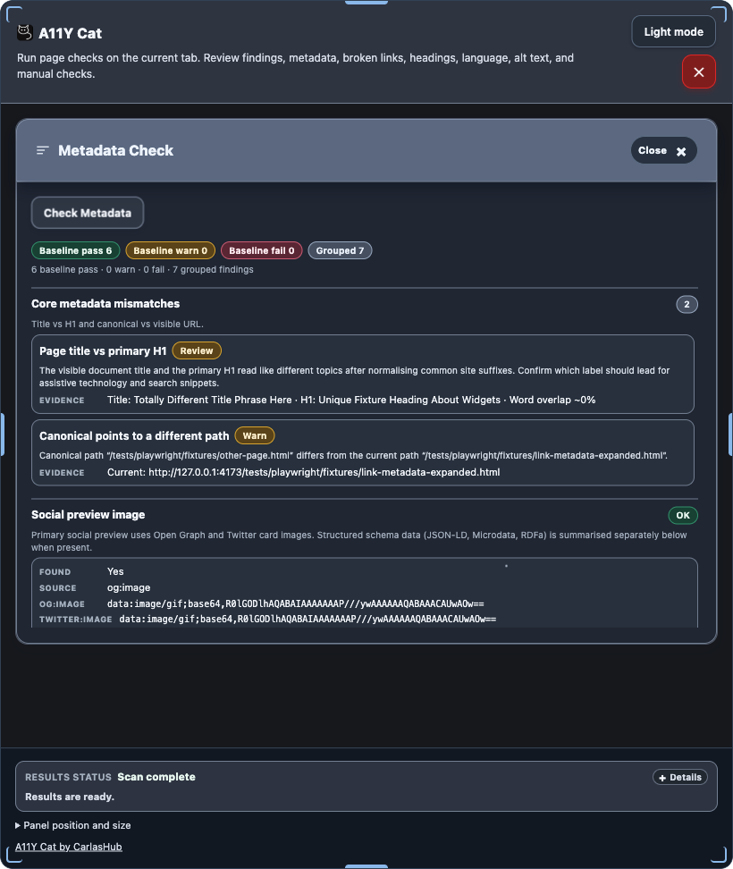

Deterministic scan results
Confirmed issues, review buckets, severity counts, filters, diagnostics, exports, and previous-scan comparison.
Local-first accessibility inspection extension.
A11Y Cat is a Chrome MV3 extension for deterministic live-page accessibility inspection, structured review workflows, explicit limitation reporting, and local evidence export.



These are the real product surfaces documented in the public site and the canonical guide.
Confirmed issues, review buckets, severity counts, filters, diagnostics, exports, and previous-scan comparison.
Broken Links, Metadata Check, Heading Structure, Language Mismatch, Spelling Check, Alt Text Analysis, and Page Text Scale.
Highlight element, copy selector, local issue state, local history, support diagnostics, and Screen Reader Review exports.
Read what A11Y Cat is for, what it helps with, what it does not prove, and how to start using it.
Use the canonical guide when a label, category, count, export, or action needs exact implementation-backed explanation.
Check local processing, stored data, export sensitivity, restricted contexts, and the limits of automated inspection.